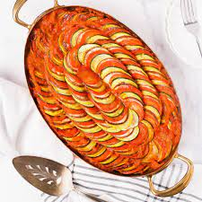
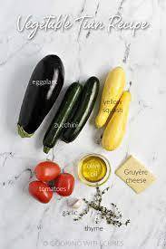

How to make this type of cookie
Follow my recipe to make delicious cookies, cakes, and ratatoullie
🍪
Ingredients
- Butter
- Eggs
- Vanilla
- Baking Soda
- Salt
- Flour
- Chocolate chips
- Nuts (optinal)
Insructions
- Beat the butter and sugars, then beat in the eggs and vanilla.
- Dissolve the baking soda in hot water and add to the mixture.
- Stir in the flour, chocolate chips, and walnuts.
- Drop dough onto a prepared baking sheet.
- Bake until the edges are golden brown.
How to make ratatoullie
Ingredints For 8 Servings
- 2 Eggplants
- 6 Roma Tomatoes
- 2 Yellow Squash
- 2 Zucchinis
Veggies
- 2 tablespoons olive oil
- 1 medium white onion, diced
- 4 cloves garlic, minced
- 1 red bell pepper, seeded and diced
- 1 yellow bell pepper, seeded and diced
- kosher salt, to taste
- freshly ground black pepper, to taste
- 28 oz crushed tomatoes(795 g)
- 2 tablespoons thinly sliced fresh basil
Sauce
- 2 tablespoons thinly sliced fresh basil
- 1 teaspoon minced garlic
- 2 tablespoons finely chopped fresh parsley
- 2 teaspoons fresh thyme leaves
- kosher salt, to taste
- freshly ground black pepper, to taste
- 4 tablespoons olive oil
Herb Seasoning
- Preheat the oven for 375˚F (190˚C).
- Using a sharp knife or a mandoline, slice the eggplant, tomatoes, squash, and zucchini into approximately ¹⁄₁₆-inch (1-mm)-thick rounds, then set aside.
- Make the sauce: Heat the olive oil in a 12-inch (30-cm) oven-safe pan over medium-high heat. Sauté the onion, garlic, and bell peppers until soft, about 10 minutes. Season with salt and pepper, then add the crushed tomatoes. Stir until the ingredients are fully incorporated. Remove from heat, then add the basil. Stir once more, then smooth the surface of the sauce with a spatula.
- Arrange the veggies in alternating slices, (for example, eggplant, tomato, squash, zucchini) on top of the sauce, working from the outer edge to the center of the pan. Season with salt and pepper.
- Make the herb seasoning: In a small bowl, mix together the basil, garlic, parsley, thyme, salt, pepper, and olive oil. Spoon the herb seasoning over the vegetables.
- Cover the pan with foil and bake for 40 minutes. Uncover, then bake for another 20 minutes, until the vegetables are softened.
- Serve hot as a main dish or side. The ratatouille is also excellent the next day–cover with foil and reheat in a 350˚F (180˚C) oven for 15 minutes, or simply microwave to desired temperature.
Instructions
Enjoy!